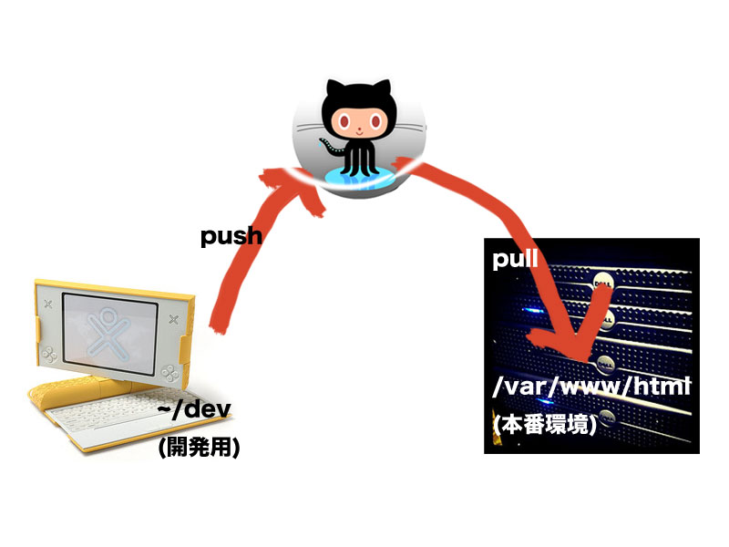
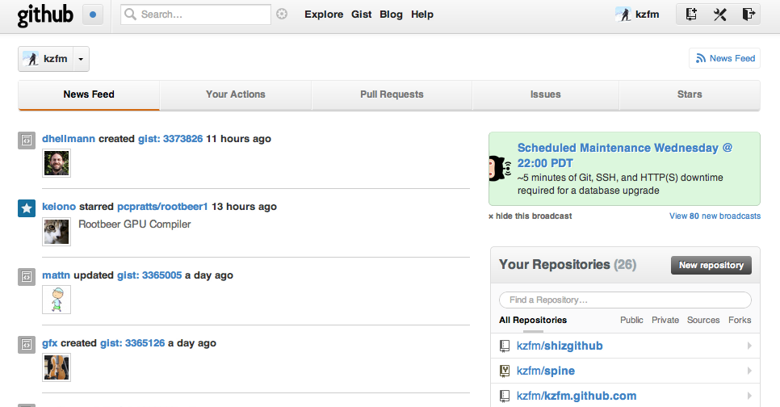

静岡Developers勉強会(GitHubハンズオン)
Push Step GitHub
kzfm (Sep 1, 2012)
kzfm (Sep 1, 2012)
資料はGitHubにあります
git clone git@github.com:kzfm/shizgithub.git
またはzipでダウンロード
簡易HTTPサーバーはpythonの場合
cd slides python -m SimpleHTTPServer # http://localhost:8000/にアクセスするとスライドが始まります

git init --bare
bareオプションを使うと作業ディレクトリ無しのリポジトリが作られる
$ git init --bare Initialized empty Git repository in /Users/kzfm/tmp/testrepo/
作ったリポジトリをoriginに指定して、pushする
$ cd [repos] # 既存のリポジトリに移動 $ git remote add origin [bareで作ったリポジトリ] $ git push origin master
こんなかんじで管理専用リポジトリを設定できる
サイト管理(/var/www/htmlで静的ファイルを管理)

今回はGitHub
Gitのリポジトリホスティングサービス(+アルファ)
とりあえずGitのリポジトリサービスとして使えるようになりましょう。
(+アルファ)の機能はあとで説明
githubのページに行ってSignup and Pricingからcreate a free accountをクリックします。
わからなかったら聞いてください
やってみなはれ

forkは既存のコードに手を加えて新しい自分用のリポジトリをメンテナンスしていく感じ。 本家に取り込んでもらうためにはpull requestを送ればいいので、本家にコミット権がなくても自由に開発できる。
gh-pagesというブランチをつくるとhttp://[username].github.com/[project]というurlでwebの公開ができるのでこれもやってみよう。
git checkout -b gh-pages vim index.html git commit -am "add index page" git push origin gh-pages


フォローしているヒトやプロジェクトのアクティビティをRSSで購読できるようになる
バグレポートとか機能の要望等議論されるべきもの
自分のコードを相手のコードにマージしてもらうための手段。自分だけのフォークを管理するだけだったらpull requestをおくる必要はない
Enjoy!